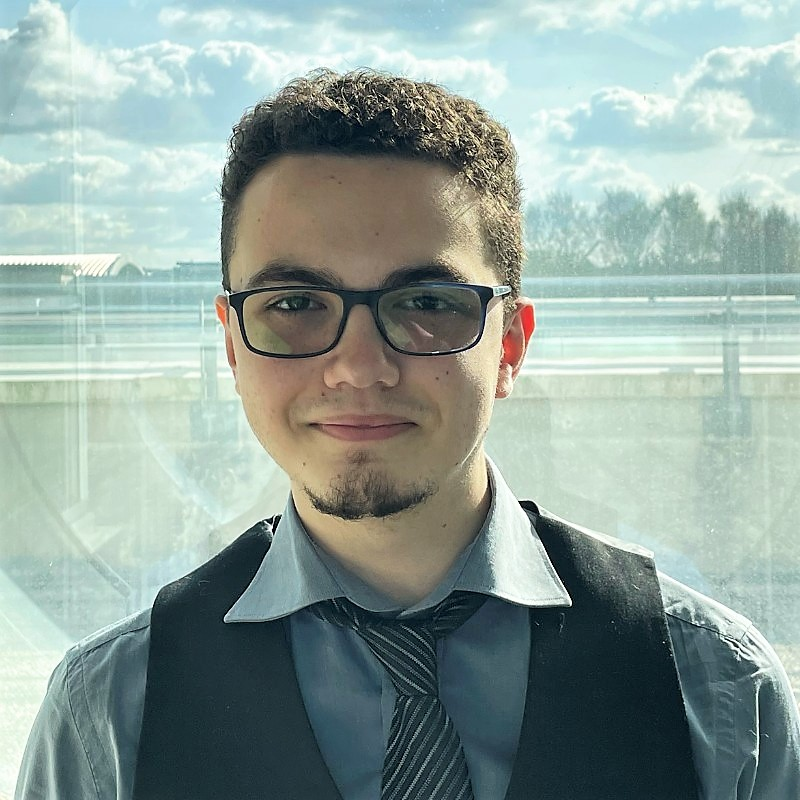

My first project in Python (with Pygame). It's a simple pong, with a main menu, a pause menu and a game over.
About

IT student at Gustave Eiffel University and R&D Developer Apprentice at WATT Earth, I've always been passionate about computer science. Web design, video games, and algorithms are my main spearhead in computer science.
Education
Experience
Projects
My very first project on Unity. It's a simple pong with some effects and a rather calm atmosphere.
Risitas_Bot is a Discord bot that can connect your Twitch chat to a Discord channel in real time, make your friends laugh by playing the meme "Issou!" on command in a voice channel and even give you some statistics about your Osu! account and last ranked games.
Work of students of DUT info 1 (IUT of Marne-la-Vallée). The students had to create a sound production inspired by the short film "Calls" by Timothée Hochet.
Contact
todo